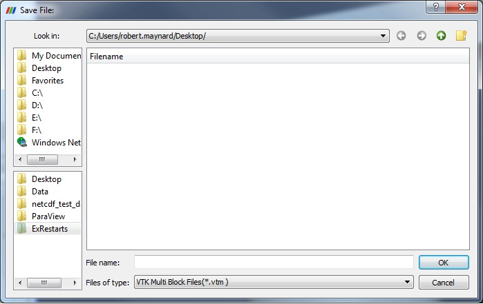
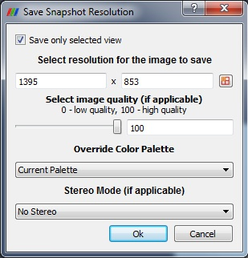
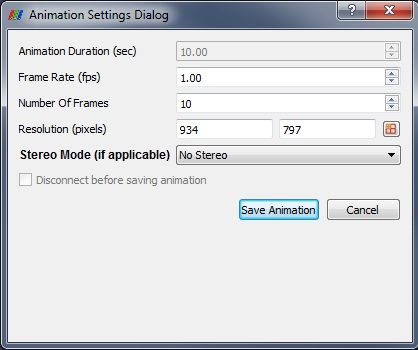

Saving Data
Saving Data
Once you have created a visualization of your data in ParaView, you can save the resulting work as raw data, image, movie, and geometry.
Save raw data
Any object in the ParaView pipeline browser can be saved to a data file by selecting Save Data from the File menu. The available file types will change based on the data set type of the current data set. The file formats in which ParaView can save data are listed on List of Writers

Save screenshots
ParaView allows the user to save either the active view or all the views. The resulting image will be saved on the client machine, even when running with a remote server. The dialog allows you to control the following:
Image size
Aspect Ratio of the Image
Image Quality
Stereo Mode

Save Animation
Once you have created an animation of your data, you can save the animation to disk either as a series of images (one per animation frame) or as a movie file. The animation will contain all the visible views.
To do this, select Save Animation from the File menu. The Animation Settings Dialog then appears, which lets you set properties for the recorded animation.
Once you press the Save Animation button, a save file dialog box will allow you to choose where to save your image or movie file(s). Enter a file name, select an image file type (.jpg, .tif, or .png) or a movie file type (.avi).
Once you choose a file name, the animation will play from beginning to end, and the animation frames generated will be used to create the selected type of image or movie file(s). While the image is playing the render window in ParaView will not update with the correct frame.
If you are connected to a remote server then the Disconnect before saving animation checkbox will be enabled. If you select this before saving the animation, then the ParaView client will disconnect from the server immediately, and the server will continue generating and saving images until the animation completes. When it is finished recording the animation, the server will shut down.
Save geometries
In addition to saving images of each time step in your animation, you may also wish to save the geometry itself. Select Save Geometry from the File menu to do this. This will cause a file navigation dialog box to be displayed. Navigate to the location where you wish to save the geometry, and enter a file name. You must save your data using ParaView’s .pvd file format.
Unlike an animation, save geometry will only save the visible geometry of the active view for each time step. The resulting .pvd file will contain a pointer to each of these files, which are saved in a folder with the same as the .pvd file.
You can later reload the .pvd file into ParaView as a time varying data set. If multiple data sets were displayed while the animation was running, they will be grouped together as a multi-block data set for each time step. If you then want to operate on the parts individually, run the Extract Blocks filter to select the appropriate block(s).
Exporting Scenes
ParaView provides functionality to export any scene set up with polygonal data (i.e without volume rendering). Currently X3D (ASCII as well as binary), VRML (Virtual Reality Modeling Language), and POV-Ray are supported. To export a scene, set up the scene in a 3D view. Only one view can be exported at a time. With the view to be exported active, choose File | Export.
The file-open dialog will list the available types. The type is determined based on the extensions of the file written out:
*.vrml -- VRML
*.x3d -- X3D ASCII
*.x3db -- X3D Binary
*.pov -- POV-Ray
|
ParaView: [Welcome | Site Map]
|